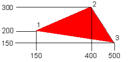
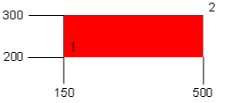
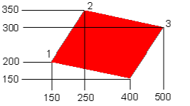

Whilst the commands for positioning and printing text on the screen are similar to other versions of BASIC (TAB and PRINT), BBCBASIC(86) has an extensive range of graphics commands. These commands are identical to those available on a BBC Micro, but different from many other versions of BASIC.
This section draws together the information about graphics facilities and colours given under various keywords. Although it repeats much of the information presented elsewhere in this manual it provides a consolidated explanation of the graphics facilities and colours available.
The following example sets the display mode to mode 3.
BBCBASIC(86) does not have a default display mode; it starts in whatever mode MS-DOS was using at the time BBCBASIC(86) was run.MODE 3
This table indicates the number of logical colours available in each display mode. As described in The Palette sub-section, the number of physical colours available depends upon the display adapter fitted.
Mode Graphics (pixels) Logical Colours Text (chars) 0 640x200 2 colour display 80x25 1 320x200 4 colour display 40x25 2 Same as mode 1 3 None 16 colour text only 80x25 4 320x200 4 colour display 40x25 5 Same as mode 4 6 None 16 colour text only 40x25 7 None Monochrome text only 80x25 Viewdata emulation 40x25 8 640x200 16 colour 80x25 9 320x200 16 colour 40x25 10 Same as mode 9 11 Same as mode 3 12 Same as mode 9 13 Same as mode 9 14 Same as mode 6 15 640x350 monochrome display 80x25 16 640x350 16 colour 80x25 or 80x43 17 Reserved for expansion. 18 640x480 16 colour 80x30 or 80x60
Modes 1, 2, 4 and 5 are identical except that, when using the NTSC composite video output, modes 4 and 5 cause the colour subcarrier to be suppressed.
Several display adapters with widely differing capabilities are available for the PC. Because of this difference in capabilities, the display modes available to BBCBASIC(86) depend upon the display adapter fitted to your computer.
Modes 8 to 15 have been mapped as closely as possible (as regards graphics resolution and number of text columns) onto CGA modes 0 to 7. This has been done to simplify conversion of software to use the EGA modes. You simply need to add 8 to the original CGA mode number.
You can automatically map the CGA modes 0 to 7 to the EGA modes 8 to 15 with the *EGA command. Normal operation may be restored by issuing the command *EGA OFF.
Graphics operations in the EGA modes are significantly slower than in the CGA modes. Since all EGA cards also support the CGA modes, you should use the CGA modes 0 to 7 unless you actually need EGA features (16 colours, for example).
Attempting to select a screen mode of which the hardware of the computer is not capable should give the 'Bad mode' error, although the screen may first be cleared. However, some computers may 'crash' if no EGA or VGA card is fitted and an attempt is made to select modes 8 to 18 (or modes 0 to 7 after *EGA). This is due to shortcomings of the BIOS fitted to some PC compatibles.
The address range (logical size) of the graphics screen in the various modes is shown in the following table. The horizontal address range is the same for all modes. Whilst the vertical address range varies between modes, the physical height of the screen remains constant.
The graphics origin (X=0, Y=0) is normally at the bottom left-hand corner of the screen. As explained later, it may be changed with the VDU 29 command.
Modes Screen Address Range 0, 1, 2, 0 to 1279 in the X axis. 0 to 799 in the Y axis. 4, 5, 8, 9, 10, 12, 13 15, 16 0 to 1279 in the X axis. 0 to1399 in the Y axis. 18 0 to 1279 in the X axis. 0 to 959 in the Y axis.
When BBCBASIC(86) is loaded the colour numbers used by COLOUR and GCOL are set to a physical colour. However you can (with certain limitations) set the actual colour displayed by these colour numbers to any one of the physical colours available by using the VDU 19 command.
Because you can change the actual colour displayed by a colour number to any one of the physical colours available to you, these numbers are called logical colours. You could, if you wished, set all the logical colour numbers to the same physical colour.
It may help you to visualise the logical colours as an artist's palette with up to 16 numbered areas where colours may be placed. You could place any of the colours available to you in any one of the areas on the palette. Once the colours were in place on the palette, you could 'paint by numbers'.
The keyword COLOUR is followed by a number. If the number is less than 128, the colour of the text is set. If the number is 128 or greater, the colour of the background is set.
There are up to 16 logical colours, but the number available varies with the mode. The logical colour numbers available to each mode are listed below with the physical colours allocated to them on power-up.
You can change the physical to logical colour mapping (palette) using the VDU 19 command.
Foreground Background Colour COLOUR 0 COLOUR 128 Black COLOUR 1 COLOUR 129 White
You can change the physical to logical colour mapping (palette) using the VDU 19 command.
Foreground Background Colour COLOUR 0 COLOUR 128 Black COLOUR 1 COLOUR 129 Magenta COLOUR 2 COLOUR 130 Cyan COLOUR 3 COLOUR 131 White
You can change the physical to logical colour mapping (palette) using the VDU 19 command.
Foreground Background Colour COLOUR 0 COLOUR 128 Black COLOUR 1 COLOUR 129 Red COLOUR 2 COLOUR 130 Green COLOUR 3 COLOUR 131 Yellow COLOUR 4 COLOUR 132 Blue COLOUR 5 COLOUR 133 Magenta COLOUR 6 COLOUR 134 Cyan COLOUR 7 COLOUR 135 White COLOUR 8 COLOUR 136 Intensified Black COLOUR 9 COLOUR 137 Intensified Red COLOUR 10 COLOUR 138 Intensified Green COLOUR 11 COLOUR 139 Intensified Yellow COLOUR 12 COLOUR 140 Intensified Blue COLOUR 13 COLOUR 141 Intensified Magenta COLOUR 14 COLOUR 142 Intensified Cyan COLOUR 15 COLOUR 143 Intensified White
Flashing colours alternate between the specified colour and the current background colour.
Foreground Background Colour COLOUR 0 COLOUR 128 Black COLOUR 1 COLOUR 129 Red COLOUR 2 COLOUR 130 Green COLOUR 3 COLOUR 131 Yellow COLOUR 4 COLOUR 132 Blue COLOUR 5 COLOUR 133 Magenta COLOUR 6 COLOUR 134 Cyan COLOUR 7 COLOUR 135 White COLOUR 8 Intensified Black COLOUR 9 Intensified Red COLOUR 10 Intensified Green COLOUR 11 Intensified Yellow COLOUR 12 Intensified Blue COLOUR 13 Intensified Magenta COLOUR 14 Intensified Cyan COLOUR 15 Intensified White COLOUR 16 Black COLOUR 17 Flashing red COLOUR 18 Flashing green COLOUR 19 Flashing yellow COLOUR 20 Flashing blue COLOUR 21 Flashing magenta COLOUR 22 Flashing cyan COLOUR 23 Flashing white COLOUR 24 Intensified Flashing black COLOUR 25 Intensified Flashing red COLOUR 26 Intensified Flashing green COLOUR 27 Intensified Flashing yellow COLOUR 28 Intensified Flashing blue COLOUR 29 Intensified Flashing magenta COLOUR 30 Intensified Flashing cyan COLOUR 31 Intensified Flashing white
You can only use the 'normal' colours for the background.
There is no normal palette in modes 3, 6, 11 and 14. However, you can change the physical to logical colour mapping with the VDU 19 command if you use the enhanced palette.
The GCOL command also specifies how the colour is to be plotted on the screen. It can be plotted directly, ANDed, ORed or Exclusive-ORed with the colour already there, or the existing colour can be inverted.
The first argument specifies the mode of action; the second specifies the logical colour. If the colour is greater than 127, then it defines the graphics background colour.GCOL mode,colour
Generally, you will not notice a change in the graphics background colour until you clear the graphics screen with a CLG command.
mode=0 Plot the colour specified. mode=1 OR the specified colour with the colour that is already there. mode=2 AND the specified colour with the colour that is already there. mode=3 Exclusive-OR the specified colour with the colour that is already there. mode=4 Invert the colour that is already there.
The logical colours available for each mode and their default physical colours are listed below. You can use the VDU 19 command to change the physical to logical colour mapping (palette). This is described later in this section.
Foreground Background Colour GCOL 0,0 GCOL 0,128 Black GCOL 0,1 GCOL 0,129 White
Foreground Background Colour GCOL 0,0 GCOL 0,128 Black GCOL 0,1 GCOL 0,129 Magenta GCOL 0,2 GCOL 0,130 Cyan GCOL 0,3 GCOL 0,131 White
Foreground Background Colour GCOL 0,0 GCOL 0,128 Black GCOL 0,1 GCOL 0,129 Red GCOL 0,2 GCOL 0,130 Green GCOL 0,3 GCOL 0,131 Yellow GCOL 0,4 GCOL 0,132 Blue GCOL 0,5 GCOL 0,133 Magenta GCOL 0,6 GCOL 0,134 Cyan GCOL 0,7 GCOL 0,135 White GCOL 0,8 GCOL 0,136 Intensified Black GCOL 0,9 GCOL 0,137 Intensified Red GCOL 0,10 GCOL 0,138 Intensified Green GCOL 0,11 GCOL 0,139 Intensified Yellow GCOL 0,12 GCOL 0,140 Intensified Blue GCOL 0,13 GCOL 0,141 Intensified Magenta GCOL 0,14 GCOL 0,142 Intensified Cyan GCOL 0,15 GCOL 0,143 Intensified White
If a CGA is fitted, the number of colours available depends upon the mode used (see later) but, in general, 16 colours are available. However, if an EGA is fitted, it is possible to select from 64 colours and with a VGA, an 'analogue' colour palette is available. It would be disappointing if these colours were not accessible by BBCBASIC(86).
This conflict is overcome by allowing the VDU 19 command to access two palettes. The normal palette maximises the similarity between the results obtained on a BBC Micro and a PC Compatible. The enhanced palette offers all the colours available on the EGA/VGA.
VDU 19,logical,physical,0,0,0
It is not possible to provide a true palette when a CGA is used because of limitations imposed by the hardware. The facilities available depend upon the mode used.
Colour Number Physical Colour 0 Black (normal background) 1 Red 2 Green 3 Yellow (Brown) 4 Blue 5 Magenta (blue-red) 6 Cyan (blue-green) 7 White (normal foreground) 8 Intensified Black (grey) 9 Intensified Red 10 Intensified Green 11 Intensified Yellow 12 Intensified Blue 13 Intensified Magenta 14 Intensified Cyan 15 Intensified White
With a CGA, the foreground colour (logical colour 1) can be set to any colour between 0 and 15.
and the background colour (logical colour 0) cannot be changed from black. Thus,VDU 19,1,physical,0,0,0
has no effect.VDU 19,0,physical,0,0,0
With an EGA, the palette for mode 0 behaves in a peculiar manner. Instead of altering the foreground colour, setting logical colour 1 alters the background colour and the foreground colour is set to cyan.
If the logical colour number is greater than 0 (a foreground logical colour), the VDU 19 command selects which of two foreground colour palettes will be used depending on the value of the physical colour number. It is not possible to change the foreground colours independently and logical colour numbers between 1 and 3 have the same effect.
The physical colour number selects which of the two palettes are to be used for the foreground colours. If the physical colour number is 0, 1, 2 or 3, then palette No 1 is selected. If the physical colour number is 4, 5, 6 or 7, then palette No 2 is selected. The colours of the two palettes are listed below.
The first example below selects palette No 1 and the second selects palette No 2.
Palette 1 Palette 2 Logical Colour Physical Colour Physical Colour 1 Red Magenta 2 Green Cyan 3 Yellow White
By specifying a logical colour of 0, the background/border colour can be set to any colour between 0 and 15. The example below sets logical colour 0 to blue.VDU 19,1,2,0,0,0 VDU 19,3,4,0,0,0
VDU 19,0,4,0,0,0
For example,
would set logical colour 1 to blue.VDU 19,1,4,0,0,0
Unfortunately, this is not as straightforward as it might seem. The actual colours depend upon the mode in use, whether the monitor has 4 or 6 inputs and how it is adjusted.
A 6 input monitor has 2 blue, 2 green and 2 red inputs. A 4 input monitor has a blue, green, red and intensity input. The former is capable of displaying 64 colours and the latter 16 colours. If the monitor is truly IBM compatible, it will only act as a 6 input monitor in mode 16. In all other modes, it will act as a 4 input monitor. This restriction is imposed by the monitor and not by the graphics adapter.
The colour number on a 6 input monitor (in mode 16) is made up as shown below.
| Not Used | Not Used | Red' | Green' | Blue' | Red | Green | Blue |
| MSB | LSB |
Thus, colour 18 would give you a combination of Green' and Green; in other words, bright green, and colour 17 would give you a combination of Green' and Blue.
The colour number on a 4 input monitor (or an IBM compatible 6 input monitor in modes other than 16) is made up in a similar manner as shown below.
| Not Used | Not Used | Not used | Intensity | Not Used | Red | Green | Blue |
| MSB | LSB |
With a 4 input monitor, the colour 18 will still give bright green (Intensity and Green), but colour 17 gives bright blue (Intensity and Blue).
Consequently, the colours displayed on a 4 input monitor are only the same as those displayed on a 6 input monitor for physical colours 0 to 7 (plus some other odd numbers). Thus, you need to know the type of monitor you are programming for.
For example,
would set logical colour 1 to bright cyan with either a 4 or 6 input monitor (27 is binary 00011011),VDU 19,129,27,0,0,0
and
would set logical colour 2 to a combination of Green', Green and Blue on a 6 input monitor and bright green on a 4 input monitor (26 is binary 00011010).VDU 19,130,26,0,0,0
Whilst a 4 input monitor only displays 16 colours, the colour numbers in the enhanced palette differ from the normal palette because the normal palette numbers have been translated to maximise compatibility with the BBC Micro.
The enhanced (IBM) colour numbers are not contiguous. With a 4 input VDU, colours 8 to 15, 32 to 39 and 40 to 47 are the same as the 'normal' colours 0 to 7 and colours 24 to 31, 48 to 55 and 56 to 63 are the same as the intensified colours 16 to 23. On the other hand, the enhanced palette colours are in ascending order of luminance and they display as a grey scale on a colour-input-compatible monochrome VDU.
For example, the following command will set logical colour 1 to green.
The text enhanced palette is the same as the graphics enhanced palette.VDU 19,129,2,0,0,0
The alternative mode provides an 'analogue' palette by allowing you to set the Red, Green and Blue intensities to any value between 0 and 63. The format of the VGA 'analogue' colour palette command is shown below.
As before, bit 7 of the logical colour needs to be set in order to indicate that an enhanced palette is to be used. In addition, the 'physical' colour is set to -1 to indicate that the following 3 numbers specify the Red, Green and Blue intensities respectively. These may be set to any value between 0 and 63.VDU 19,logical,-1,red,green,blue
The following example sets colour 0 to a dull blue.
VDU 19,128,-1,0,0,10
The border is specified by using -1 as the logical colour number.
The following example sets the border colour to green.
Some graphics adapters appear not to allow the border colour to be changed at all.VDU 19,-1,2,0,0,0
COLOUR 7 COLOUR 128 GCOL 0,7 GCOL 0,128
Most EGA cards do not emulate the (peculiar) CGA mode 0 characteristics and the VDU 20 command acts in an apparently unusual manner in this mode if an EGA or VGA is used. This is because the EGA/VGA default palette for mode 0 is cyan for logical colour 1 and white for logical colour 0.
Some EGA cards come with a software utility which improves their CGA emulation.
Because of the facilities provided by the hardware, it has not been possible to retain the same vertical graphics coordinates as the BBC Micro. It would have been possible to scale the vertical coordinates if only graphics had been involved, but it is not possible to scale characters.
The physical screen is a window on the graphics area. Its maximum 'logical' size depends upon the mode selected and it is much smaller then the graphics area.
By default, the graphics window is the full size of the screen and the graphics origin is at the bottom left-hand corner of the screen. You may change the size of the graphics window with the VDU 24 command and the graphics origin with the VDU 29 command. The action of these commands is described later in the Windows sub-section.
You can move or draw to any point which is within the graphics area whether or not this point is outside the current graphics window . If you draw a line to a point outside the graphics window, the line is not displayed beyond the boundary of the window.
The start of the line is the current graphics cursor position. This is either the end of the last line drawn or a point specified by a MOVE statement.
The line is drawn in the current graphics foreground colour. This colour can be changed using the GCOL statement (see earlier).
The DRAW statement is identical to PLOT 5.DRAW x,y MOVE 200,300 DRAW 640,800
The MOVE statement is identical to PLOT 4.MOVE X,Y MOVE 124,327
Lines are drawn from the current graphics cursor position (the last point 'visited') to the specified X,Y coordinates.PLOT mode,X,Y
As previously described, the two most commonly used statements, PLOT 4 and PLOT 5, have the duplicate keywords MOVE and DRAW.
The available PLOT modes are listed on the following pages.
Mode Action 0 Move relative to the last point. 1 Draw a line, in the current graphics foreground colour, relative to the last point. 2 Draw a line, in the logical inverse colour, relative to the last point. 3 Draw a line, in the background colour, relative to the last point. 4 Move to the absolute position. 5 Draw a line, in the current foreground colour, to the absolute coordinates specified by X and Y. 6 Draw a line, in the logical inverse colour, to the absolute coordinates specified by X and Y. 7 Draw a line, in the current background colour, to the absolute coordinates specified by X and Y.
Mode Action 8-15 As 0-7, except that the last point is plotted twice. 16-31 As 0-15, but the line is drawn dotted. 32-47 As 0-15, but the line is drawn dashed. 48-63 As 0-15, but the line is drawn broken. 64-71 As 0-7, but only a single point is plotted.
If the PLOT number is 73 or 77, the line is drawn in the current foreground colour. If the PLOT number is 72 or 76, the cursor movements are made, but no line is drawn.
The following example plots and fills the triangle illustrated in the current graphics foreground colour.

MOVE 150,200 MOVE 400,300 PLOT 85,500,150
If the PLOT number is 91 or 95, the line will be drawn in the current background colour. If the PLOT number is 88 or 92, the cursor movements are made, but no line is drawn.
The following example plots and fills the rectangle illustrated in the current graphics foreground colour.

MOVE 150,200 PLOT 101,500,300
If the PLOT number is 107 or 111, the line will be drawn in the current background colour. If the PLOT number is 104 or 108, the cursor movements are made, but no line is drawn.
The order in which the points are visited is important.point3-point2+point1
The following example plots and fills the parallelogram illustrated in the current graphics foreground colour.

MOVE 150,200 MOVE 250,350 PLOT 117,500,300
If the PLOT number is 123 or 127, the line will be drawn in the current background colour. If the PLOT number is 120 or 124, the cursor movements are made, but no line is drawn.
will draw a circle centred on x1,y1 with the point x2,y2 in its circumference.MOVE x1,y1 PLOT 149,x2,y2
orMOVE x,y PLOT 145,R,0
will draw a circle of radius R centred about the point x,y.MOVE x,y PLOT 145,0,R
The shape is drawn 'circular' in terms of graphics units. As previously explained, the shape will be elliptical in modes 15 and 16. The adjustment of the monitor (height, width and linearity) will also affect the shape displayed.
If plot codes 156 to 159 are used, the point specified will be on the circumference of the disc. If plot codes 152 to 155 are used, the non-zero parameter is interpreted as the radius of the disc.
would draw a line in the current graphics foreground colour from 200, 300 to 200,450.PLOT 1,0,150
Logical Inverse 0 1 1 0
Logical Inverse 0 3 1 2 2 1 3 0
Logical Inverse 0 15 1 14 2 13 3 12 etc. 12 3 13 2 14 1 15 0
There must not be a space between POINT and the opening bracket.
You can use POINT to find out the colour of the screen at the specified point and take action accordingly. In an adventure game, for example, the swamps may be marked in green. If the explorer ventured into a green area he must be in the swamp and 'swamp type demons' would be activated.colour=POINT(X,Y) IF POINT(X,Y)=3 THEN 300
The text and graphics windows may be restored to their default state with the VDU 26 command.
The CLS command clears the text window to the current text background colour. The CLG command clears the graphics window to the current graphics background colour with the current graphics background plotting action (set by GCOL). If the text and graphics windows overlap, the background colour of the overlapping area will be set by the last clear command issued.
If the text cursor is outside the new window, it is moved to the new home position (top left of the window). If it is inside the new window, it is not moved.
If any of the edges of the new text window would be off the screen, the command is ignored.
The following example defines a text window with the bottom left corner at 0,15 (X across, Y down) and the top right corner at 30,3 (X across, Y down).
VDU 28,0,15,30,3
If any of the edges of the new graphics window would be off the screen, the command is ignored. It is particularly easy to select invalid window limits if the graphics origin has been moved. It is advisable, therefore, to precede a VDU 24 command with a VDU 26 command to reset the windows and the graphics origin.
The following example defines a graphics window with the bottom left corner at 200,100 (X,Y) and the top right corner at 500,300 (X,Y).
Note the use of semicolons in this VDU command. Their significance is explained under VDU in the Keywords section.VDU 24,200;100;500;300;
The following example sets the graphics origin to the centre of the screen (except for modes 16 and 18).
Note the use of semicolons in this VDU command. Their significance is explained under VDU in the Keywords section.VDU 29,640;400;
will print the word 'Fred' starting at column 15 of row 10. The top left hand corner of the text window is 0,0.PRINT TAB(10,15)"Fred"
When printing characters at the graphics cursor position, the top left-hand corner of the character cell is positioned at the graphics cursor position.
In the EGA and VGA modes (8, 9, 10, 12, 13, 15, 16 and 18), user defined characters programmed with VDU 23 are active only in the VDU 5 mode (plot character at graphics cursor position). In VDU 4 mode, the standard ROM font is used for characters 128 to 255.
The format of the VDU 23 command is;
'Char_no' is the character number to be programmed and 'r1' to 'r8' are the decimal values of the bytes which define the character, top to bottom. For example, the character illustrated below is defined as character 130 by the following VDU 23 command.VDU 23,char_no,r1,r2,r3,r4,r5,r6,r7,r8
Because of hardware limitations, characters up to &7F (127) are not re-programmable.VDU 23,130,24,36,66,255,24,24,24,255 . . . * * . . . r1 = 24 . . * . . * . . r2 = 36 . * . . . . * . r3 = 66 * * * * * * * * r4 = 255 . . . * * . . . r5 = 24 . . . * * . . . r6 = 24 . . . * * . . . r7 = 24 * * * * * * * * r8 = 255
Since user defined characters occupy a 'cell' which is 8 pixels by 8 pixels, the number of rows of 'VDU 5 mode' text which may be displayed on the screen depends upon the vertical resolution of the display mode in use.
In all modes other than modes 16 and 18, 25 lines of 'VDU 5' text may be displayed. In mode 16, 44 lines of 'VDU 5' text may be displayed. In mode 18, 60 lines of 'VDU 5' text and 30 lines of 'normal' text may be displayed.
In order to use the OSWORD call, you need to define a 9 byte area of memory in which the character code is passed and the dot pattern is returned. As with the BBC Micro, the OSWORD function number is passed in A% and the address of the parameter block is passed in X% and Y%. The least significant byte is passed in X% and the most significant in Y%
The following program segment:
The character dot pattern is returned in the 8 bytes 'pattern?1' to 'pattern?8'.DIM pattern 8 ?pattern=character A%=&A X%=pattern MOD 256:Y%=pattern DIV 256 CALL &FFF1
The 'Get Character Pattern' function is the only OSWORD call currently available and it is not, therefore, strictly necessary to set A% to the function number. However, doing so makes the program compatible with any future enhancements of BBCBASIC(86).
The procedure uses the 'Get Character Pattern' OSWORD function to read the dot pattern of each character in the string. This pattern is used to generate two user defined characters; one for the top half of the double height character and the other for the bottom. These two characters are then written to the screen, one below the other.
Reserve 9 bytes of memory for the parameter block.10 REM DOUBLE.BBC 20 : 30 REM DJM 28 Mar 87 40 : 50 REM Prints double height characters in CGA graphics modes 60 :
70 DIM ptn 8
80 :
90 CLS
100 :
110 PRINT TAB(10,5)"This is a test"
120 PRINT TAB(10,7);
130 PROC_double("This is a test")
140 END
150 :
160 :
Print the passed string parameter starting at the current
text cursor position.
Set up the OSWORD function number and the address of the parameter block170 DEF PROC_double(p$) 180 LOCAL x,y 190 x=POS:y=VPOS
For each character in the string200 A%=&A 210 X%=ptn MOD 256 220 Y%=ptn DIV 256
Load byte 0 of the parameter block with the ASCII code of the character and call OSWORD.230 FOR i=1 TO LEN(p$)
Define two double height characters, one for the top half of the character and one for the bottom.240 ?ptn=ASC(MID$(p$,i,1)) 250 CALL &FFF1
Print the two characters one below the other.260 VDU 23,128,ptn?1,ptn?1,ptn?2,ptn?2,ptn?3,ptn?3,ptn?4,ptn?4 270 VDU 23,129,ptn?5,ptn?5,ptn?6,ptn?6,ptn?7,ptn?7,ptn?8,ptn?8
280 PRINT TAB(x,y);CHR$(128) 290 PRINT TAB(x,y+1);CHR$(129) 300 x=x+1 310 NEXT
As mentioned earlier, if an EGA or VGA mode is selected (mode > 7) user defined characters may only be written at the graphics cursor position. If a CGA mode is selected, user defined characters may be written at either the graphics or text cursor position.
The characters have a 'transparent' background and they are plotted according to the current foreground GCOL rules and colour. VDU 127 (DEL) is an exception; it backspaces and deletes just as it does in the normal text mode using the current background GCOL colour and action.
In the graphics modes, characters may be positioned at any graphics coordinate within the graphics window. The top left of the character cell is the reference point. Characters are clipped to the limits of the graphics window if necessary. No scrolling takes place.
The characters are 'opaque' and they can be positioned only at text coordinates within the text window. The text within the window scrolls as necessary.
User defined characters may only be written at the text cursor position if a CGA mode (mode < 8) is selected.
The ASCII code of the character at the current text cursor position is returned and assigned to a variable called 'char' by the following program segment.
The 'Read Character' function is the only OSBYTE function currently available and it is not, therefore, strictly necessary to set A% to the function number. However, doing so makes the program compatible with any future enhancements of BBCBASIC(86).A%=&87 char=(USR(&FFF4) AND &FF00) DIV 256
|
CONTINUE
|